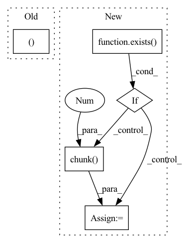

Pattern ID :3387
Before Change
)
def forward(self, x):
b, c, h, w = x.shape
qkv = self.to_qkv(x).chunk(3, dim = 1)
q, k, v = map(lambda t: rearrange(t, "b (h c) x y -> b h c (x y)", h = self.heads), qkv)
After Change
h = self.heads
x = self.norm(x)
if exists( self.time_cond):
assert exists(time)
scale, shift = self.time_cond(time).chunk(2 , dim = -1)
x = (x * (scale + 1)) + shift
qkv = self.to_qkv(x).chunk(3, dim = -1)
q, k, v = map(lambda t: rearrange(t, "b n (h d) -> b h n d", h = h), qkv)In pattern: SUPERPATTERN
Frequency: 4
Non-data size: 5
Instances Fragment ID: 17442446
Project Name: lucidrains/recurrent-interface-network-pytorch
Commit Name: 5cd08b2823cfe105785a525aea43a7396fea07e9
Time: 2022-12-24
Author: lucidrains@gmail.com
File Name: rin_pytorch/rin_pytorch.py
M Class Name: LinearAttention
N Class Name: LinearAttention
M Method Name: forward(3)
N Method Name: forward(2)
M Parent Class: nn.Module
N Parent Class: nn.Module
M File Name: rin_pytorch/rin_pytorch.py
N File Name: rin_pytorch/rin_pytorch.py
M Start Line: 114
M End Line: 126
N Start Line: 136
N End Line: 157
Before Change
x,
context = None
):
b, c, h, w = x.shape
context = default(context, x)
qkv = (self.to_q(x), *self.to_kv(context).chunk(2, dim = 1))After Change
x = self.norm(x)
if exists( self.time_cond):
assert exists(time)
scale, shift = self.time_cond(time).chunk(2 , dim = -1)
x = (x * (scale + 1)) + shift
if has_context:
context = self.norm_context(context) Fragment ID: 17442447
Project Name: lucidrains/recurrent-interface-network-pytorch
Commit Name: 5cd08b2823cfe105785a525aea43a7396fea07e9
Time: 2022-12-24
Author: lucidrains@gmail.com
File Name: rin_pytorch/rin_pytorch.py
M Class Name: Attention
N Class Name: Attention
M Method Name: forward(4)
N Method Name: forward(3)
M Parent Class: nn.Module
N Parent Class: nn.Module
M File Name: rin_pytorch/rin_pytorch.py
N File Name: rin_pytorch/rin_pytorch.py
M Start Line: 149
M End Line: 161
N Start Line: 199
N End Line: 225
Before Change
x,
convolve_across_time = True
):
b, c, *_, h, w = x.shape
is_video = x.ndim == 5
convolve_across_time &= is_videoAfter Change
):
scale_shift = None
if exists(self.time_mlp) and exists( time_emb):
time_emb = self.time_mlp(time_emb)
time_emb = rearrange(time_emb, "b c -> b c 1 1")
scale_shift = time_emb.chunk(2 , dim = 1)
h = self.block1(x, scale_shift = scale_shift, convolve_across_time = convolve_across_time)
h = self.block2(h, convolve_across_time = convolve_across_time) Fragment ID: 17442445
Project Name: lucidrains/make-a-video-pytorch
Commit Name: 0af63d7db1964f26183becb09f25cd09c40ffbf5
Time: 2022-12-09
Author: lucidrains@gmail.com
File Name: make_a_video_pytorch/make_a_video.py
M Class Name: Pseudo3DConv
N Class Name: ResnetBlock
M Method Name: forward(4)
N Method Name: forward(3)
M Parent Class: nn.Module
N Parent Class: nn.Module
M File Name: make_a_video_pytorch/make_a_video.py
N File Name: make_a_video_pytorch/make_a_video.py
M Start Line: 93
M End Line: 115
N Start Line: 239
N End Line: 253
Before Change
if not self.use_pre_downsample:
x = self.downsample(x)
return x, skips
class UpsampleBlock(nn.Module):
def __init__(After Change
// Compute scale and shift from time_context
scale_shift = None
if exists(self.to_time_embedding) and exists( time_context):
time_embedding = self.to_time_embedding(time_context)
time_embedding = rearrange(time_embedding, "b c -> b c 1")
scale_shift = time_embedding.chunk(2 , dim=1)
h = self.block2(h, scale_shift=scale_shift)
return h + self.to_out(x) Fragment ID: 17442450
Project Name: archinetai/audio-diffusion-pytorch
Commit Name: c6edef1c655542c2bf6a2200ecdf3b4128c01e61
Time: 2022-07-13
Author: flavio.schneider.97@gmail.com
File Name: audio_diffusion_pytorch/unet.py
M Class Name: DownsampleBlock
N Class Name: ResnetBlock1d
M Method Name: forward(3)
N Method Name: forward(3)
M Parent Class: nn.Module
N Parent Class: nn.Module
M File Name: audio_diffusion_pytorch/unet.py
N File Name: audio_diffusion_pytorch/unet.py
M Start Line: 453
M End Line: 468
N Start Line: 163
N End Line: 174